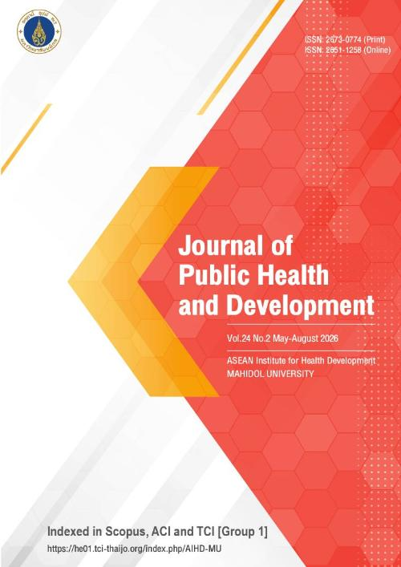

Vol 24 No 2 (2026)
Published: 2026-05-08
10.55131/jphd/2026/240201
1-14
10.55131/jphd/2026/240202
15-32
10.55131/jphd/2026/240203
33-46
10.55131/jphd/2026/240204
47-72
10.55131/jphd/2026/240205
73-85
10.55131/jphd/2026/240206
86-101
10.55131/jphd/2026/240207
102-116
10.55131/jphd/2026/240208
117-128
10.55131/jphd/2026/240209
129-141
10.55131/jphd/2026/240210
142-157
10.55131/jphd/2026/240211
158-171
10.55131/jphd/2026/240212
172 -185
10.55131/jphd/2026/240213
186-199
10.55131/jphd/2026/240214
200-216
10.55131/jphd/2026/240215
217-233
10.55131/jphd/2026/240216
234-249
10.55131/jphd/2026/240217
250-262
10.55131/jphd/2026/240218
263-275
10.55131/jphd/2026/240219
276-289
10.55131/jphd/2026/240220
290-308
10.55131/jphd/2026/240221
309-322
10.55131/jphd/2026/240222
323-335
10.55131/jphd/2026/240223
336-353
10.55131/jphd/2026/240224
354-372
10.55131/jphd/2026/240225
373-394